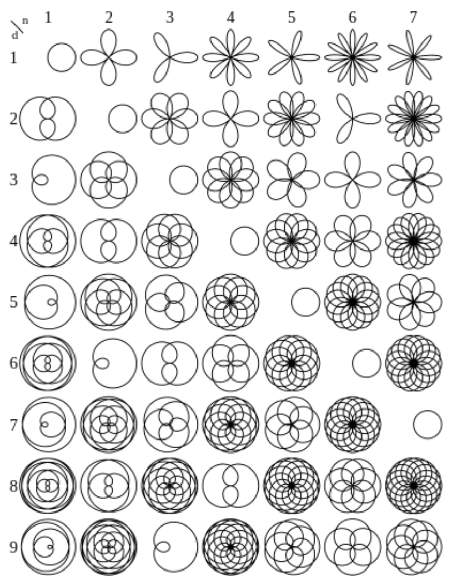

ARTIFICIAL CREATURES
CHALLENGE
TINKERING
Dit is het tinkering gedeelte van de challenge artificial creature.
Experiment 1
Voor het eerste experiment koos ik ervoor om te werken met lichten. Het programma koos zelf de lengte en kleur en maakte vervolgens allemaal lijnen om dit kunstwerk te vormen.
Ik ondervond hier geen problemen mee.
code
Experiment 2
Voor deze tinkering koos ik voor nog een animatie, maar hierbij ging het vooral om het positioneren van verschillende objecten. Gaan deze over elkaar heen of niet.
Ik had hier wel moeite mee, het positioneren ging vrij stroef en vaak niet geleidelijk over elkaar heen.
code
Experiment 3
Bij dit experiment wilde ik zelf kunst vormen d.m.v. bloemen. Ik kwam deze website tegen die de x- en y-as gaf om Processing zelf, door een loop, bloemen te maken.
